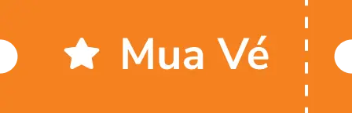

<header class="tw-flex tw-items-center tw-justify-between tw-bg-white tw-shadow-md tw-py-16px tw-px-24px">
  <!-- Logo -->
  <div class="tw-flex tw-items-center" (click)="goToHome()">
    
  </div>
  <div class="tw-flex tw-gap-35px">
    
    <!-- Menu điều hướng (hiển thị trên desktop) -->
    <nav class="tw-hidden lg:tw-flex tw-items-center tw-gap-24px">

      <div *ngFor="let menuItem of menuItems" class="tw-flex tw-items-center tw-gap-2 group hover:tw-text-orange">
        <ul
          class="tw-whitespace-nowrap tw-font-roboto-medium tw-text-16px tw-cursor-pointer tw-transition-colors"
          [ngClass]="{'tw-pr-8px': menuItem.withPadding}"
        >
          {{ menuItem.label }}
        </ul>
        <svg
          xmlns="http://www.w3.org/2000/svg"
          fill="none"
          viewBox="0 0 24 24"
          stroke-width="1.5"
          stroke="currentColor"
          class="tw-w-[15px] tw-h-[15px] tw-transition-colors"
        >
          <path stroke-linecap="round" stroke-linejoin="round" d="m19.5 8.25-7.5 7.5-7.5-7.5"/>
        </svg>
      </div>


    </nav>
  </div>
  <!-- Tìm kiếm + Đăng nhập + Nút Menu -->
  <div class="tw-flex tw-items-center tw-gap-16px">
    <!-- Icon Tìm kiếm (hiển thị trên desktop) -->
    <svg xmlns="http://www.w3.org/2000/svg" fill="none" viewBox="0 0 24 24" stroke-width="1.5" stroke="currentColor"
         class="tw-hidden lg:tw-block tw-w-24px tw-h-24px tw-text-gray-700 hover:tw-text-primary tw-cursor-pointer">
      <path stroke-linecap="round" stroke-linejoin="round"
            d="m21 21-5.197-5.197m0 0A7.5 7.5 0 1 0 5.196 5.196a7.5 7.5 0 0 0 10.607 10.607Z"/>
    </svg>
    <!-- Nút đăng nhập luôn hiển thị -->
    <button
      class="tw-bg-secondary tw-font-roboto-bold tw-px-16px tw-py-8px tw-rounded-8px tw-transition-transform hover:tw-scale-105">
      Đăng nhập
    </button>
    <!-- Nút Menu (chỉ hiển thị trên mobile) -->
    <button (click)="toggleMenu()" class="tw-flex lg:tw-hidden tw-text-black tw-text-24px tw-cursor-pointer">
      ☰
    </button>
  </div>
</header>

<div *ngIf="isMenuOpen"
     class="tw-bg-black tw-opacity-15 tw-w-full tw-h-full tw-fixed tw-top-0 tw-left-0 tw-bottom-0 tw-right-0">hello
</div>

<!-- Side Drawer (menu trượt từ bên phải) -->
<div
  class="tw-fixed tw-top-0 tw-right-0 tw-w-72 tw-h-screen tw-bg-white tw-z-50 tw-transition-transform tw-duration-300 tw-ease-in-out"
  [ngClass]="isMenuOpen ? 'tw-translate-x-0' : 'tw-translate-x-full'">
  <!-- Header của Side Drawer -->
  <div class="tw-flex tw-items-center tw-justify-between tw-p-5 tw-shadow-sm">
    <h2 class="tw-font-bold tw-text-16px">Menu</h2>
    <!-- Nút đóng menu -->
    <button class="tw-text-2xl tw-font-bold tw-cursor-pointer" (click)="toggleMenu()">×</button>
  </div>

  <!-- Nội dung menu -->
  <nav class="tw-flex tw-flex-col tw-gap-4 tw-p-4">
    <button class="tw-bg-primary tw-text-white tw-font-roboto-bold tw-px-16px tw-py-8px tw-rounded-8px">
      Mua vé
    </button>
    <ul class="tw-text-black tw-font-roboto-medium hover:tw-text-primary tw-cursor-pointer">
      Phim
    </ul>
    <ul class="tw-text-black tw-font-roboto-medium hover:tw-text-primary tw-cursor-pointer">
      Rạp/Giá vé
    </ul>
    <!-- Icon Tìm Kiếm -->
    <svg
      xmlns="http://www.w3.org/2000/svg"
      fill="none"
      viewBox="0 0 24 24"
      stroke-width="1.5"
      stroke="currentColor"
      class="tw-w-24px tw-h-24px tw-text-gray-700 hover:tw-text-primary tw-cursor-pointer"
    >
      <path
        stroke-linecap="round"
        stroke-linejoin="round"
        d="m21 21-5.197-5.197m0 0A7.5 7.5 0 1 0 5.196 5.196a7.5 7.5 0 0 0 10.607 10.607Z"
      />
    </svg>
    <button class="tw-bg-secondary tw-text-white tw-font-roboto-bold tw-px-16px tw-py-8px tw-rounded-8px">
      Đăng nhập
    </button>
    <button class="tw-text-blue-600 tw-font-bold">THAM GIA G STAR</button>
  </nav>
</div>
